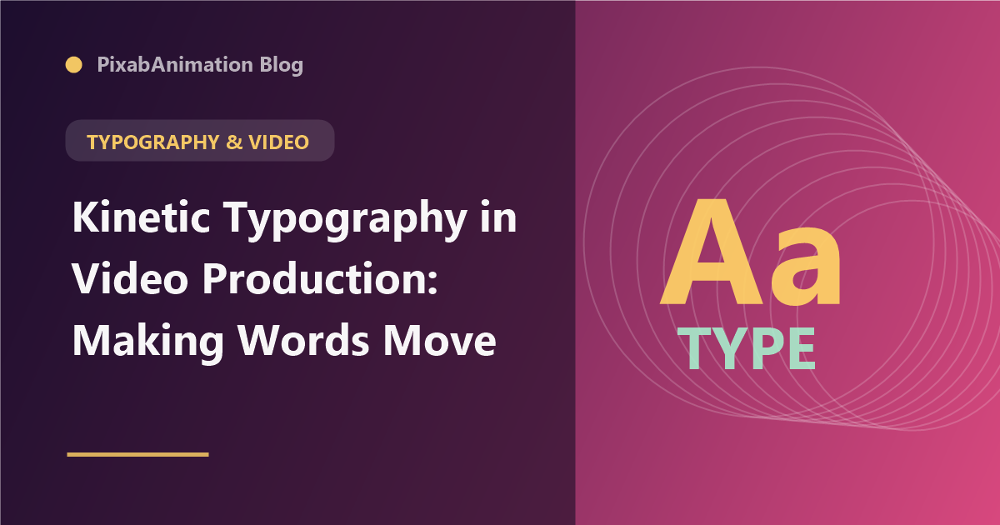

Kinetic Typography in Video Production: Making Words Move

Kinetic typography — animated text that moves, transforms, and communicates through motion — has become an essential element of modern video production. From explainer videos and social media content to title sequences and advertisements, kinetic typography captures attention, reinforces messaging, and adds professional polish to video content.
The Power of Text in Motion
Animated text engages viewers more effectively than static text because motion naturally draws the human eye. Kinetic typography can pace the viewer's reading, emphasize key concepts through timing and movement, convey emotion through motion style, and create visual interest that holds attention. Studies show that viewers retain information presented through kinetic typography at significantly higher rates than static text presentations.
Fundamental Kinetic Typography Techniques
Word-by-word animation reveals text one word at a time, controlling the viewer's reading pace. Character animation applies effects at the individual letter level, creating detailed typographic performances. Scroll-based typography appears to write itself on screen, creating dramatic reveals. Transformative typography changes size, weight, or position to emphasize meaning. Each technique serves different communication goals and should be chosen based on the content's rhythm and emotional tone.
Voice Synchronization
Voice-synced kinetic typography matches text animation to spoken audio, creating a powerful multisensory experience. The key to effective voice sync is animating words in rhythm with the speaker's pace, emphasizing words that receive vocal stress, using timing to match natural speech pauses, and adjusting animation speed to the emotional tone of each section. AI-powered tools can now automate much of this process, analyzing audio tracks and generating synchronized typography animations.
Style and Aesthetic Considerations
The visual style of kinetic typography should match the content's purpose and audience. Bold, energetic animations with rapid transitions suit upbeat content like music videos and social media ads. Elegant, subtle motion with generous spacing works for luxury brands and corporate communications. Playful, organic movement with varied typography fits creative and lifestyle content. Typography choices — font style, weight, color, and tracking — should reinforce the motion style and brand identity.
Software and Workflow
After Effects remains the primary tool for professional kinetic typography, with its comprehensive text animation tools. The Text Animator in After Effects provides per-character control over position, scale, rotation, opacity, and color. Tools like Animation Composer and TextEvo offer pre-built kinetic typography templates that speed up production. For web-based projects, Lottie enables exporting kinetic typography animations from After Effects to lightweight JSON files that play natively in browsers and mobile apps.
"Kinetic typography is not decoration — it is a communication tool. Every movement should serve the message, guiding the viewer's attention and reinforcing the spoken or written content." — Typography in Motion, 2026